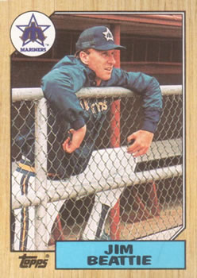

James Lee Beattie "Jim"
Career Highlights & Facts
- Jim Beattie was the New York Yankees' first-round draft pick (10th overall) in the 1975 MLB draft.
- He started Game 4 of the 1978 World Series for the New York Yankees against the Los Angeles Dodgers, allowing only one earned run over 7.1 innings.
- He was involved in a significant five-player trade between the Yankees and Mariners in November 1979, moving to Seattle along with fellow pitcher Ruppert Jones in exchange for Juan Beniquez, Bobby Brown, and a player to be named later.
- He pitched over 200 innings in a season once, in 1984 for the Seattle Mariners, recording a career-high 12 wins and two shutouts.
The Original Clue

Career Statistics
| Year | Team | W | L | ERA | G | GS | CG | SHO | SV | IP | H | R | ER | BB | SO |
|---|---|---|---|---|---|---|---|---|---|---|---|---|---|---|---|
| 1978 | NYY | 6 | 9 | 3.82 | 20 | 20 | 2 | 0 | 0 | 113.0 | 104 | 55 | 48 | 47 | 59 |
| 1979 | NYY | 3 | 4 | 5.17 | 12 | 11 | 0 | 0 | 0 | 54.0 | 57 | 36 | 31 | 27 | 30 |
| 1980 | SEA | 8 | 12 | 4.89 | 30 | 30 | 8 | 2 | 0 | 196.2 | 216 | 118 | 107 | 78 | 113 |
| 1981 | SEA | 4 | 6 | 2.92 | 18 | 18 | 7 | 1 | 0 | 123.1 | 108 | 44 | 40 | 41 | 52 |
| 1982 | SEA | 7 | 12 | 4.09 | 28 | 28 | 7 | 1 | 0 | 180.0 | 177 | 93 | 82 | 81 | 85 |
| 1983 | SEA | 10 | 11 | 3.61 | 31 | 31 | 5 | 1 | 0 | 192.0 | 188 | 90 | 77 | 70 | 102 |
| 1984 | SEA | 12 | 14 | 3.96 | 32 | 32 | 4 | 2 | 0 | 207.2 | 207 | 102 | 91 | 79 | 103 |
| 1985 | SEA | 2 | 9 | 5.61 | 20 | 18 | 0 | 0 | 0 | 96.1 | 112 | 67 | 60 | 37 | 44 |
| 1986 | SEA | 0 | 10 | 7.24 | 19 | 16 | 0 | 0 | 0 | 74.2 | 102 | 68 | 60 | 36 | 72 |